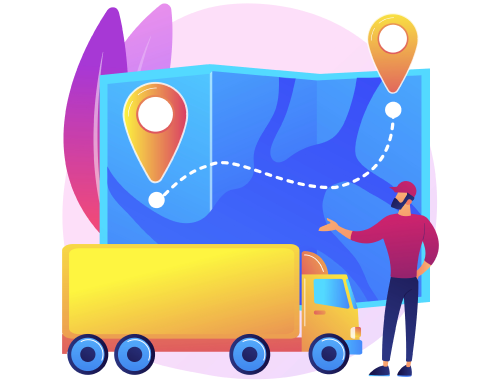
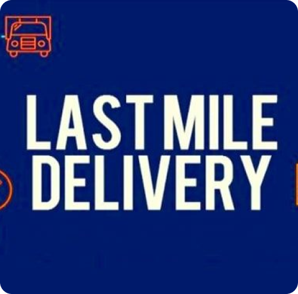
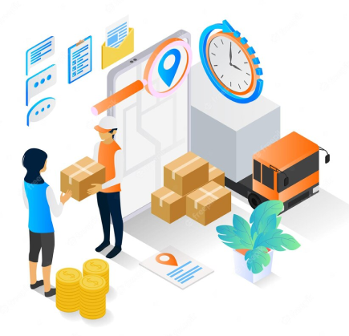
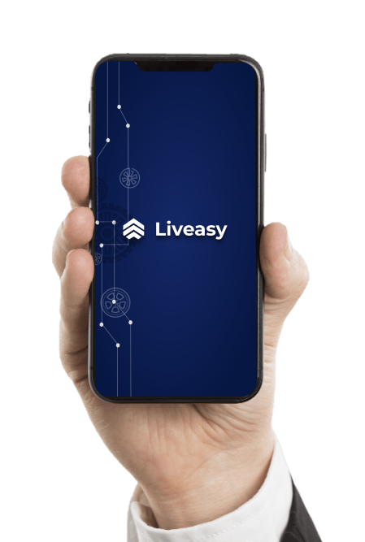

Top Techniques for Optimizing Last Mile Delivery Logistics
INTRODUCTION
In the dynamic realm of freight management, the last mile of delivery logistics has long been a complex puzzle. Challenges such as timely deliveries, cost-efficiency, and customer satisfaction have tested the limits of traditional methods. Fortunately, the landscape is evolving, offering innovative solutions to these industry-wide issues. In this blog, we delve into advanced techniques for optimizing last mile delivery logistics and how Liveasy Logistics stands out as a leading force in this transformative journey.
Navigating Last Mile Complexity
The last mile in logistics represents the final stretch of a product's journey, from the distribution center to the customer's doorstep. It's a critical juncture, marked by intricate routes, multiple stops, and the challenge of meeting customer expectations.

Real-Time Route Optimization: A Game-Changer

In this fast-paced era, real-time route optimization has emerged as a game-changer. Leveraging cutting-edge algorithms, Liveasy Logistics calculates the most efficient delivery routes. This not only minimizes travel time but also reduces fuel consumption, ultimately lowering operational costs. The outcome? Swift, cost-effective deliveries that keep both businesses and customers delighted.
Smart Delivery Management Systems
Liveasy's innovative spirit extends to smart delivery management systems. These systems offer real-time tracking and monitoring of deliveries, ensuring complete visibility into the last mile. From providing package status updates to estimating delivery times accurately, these systems elevate transparency to new heights, enhancing customer satisfaction.

Dynamic Capacity Adjustments

Fluctuations in demand are inherent in last mile logistics. Liveasy's solutions include dynamic capacity adjustments, allowing businesses to scale their delivery resources up or down as demand surges or recedes. This adaptability ensures efficient operations, preventing overloads or underutilization of resources.
Customer-Centric Delivery Options
In today's world, customer experience reigns supreme. Liveasy empowers businesses to offer customers convenient delivery options, including personalized time slots and delivery preferences. This elevated level of personalization goes a long way in enhancing customer satisfaction and fostering loyalty.

Seamless Communication

Effective communication lies at the heart of last mile optimization. Liveasy's systems facilitate seamless communication between drivers, customers, and dispatchers. This streamlined communication ensures swift problem resolution, contributing to overall customer satisfaction.
Liveasy's Perfect Solution
Liveasy Logistics is at the forefront of revolutionizing last mile delivery logistics. Our unwavering commitment to addressing industry challenges shines through in our comprehensive suite of solutions. By enhancing transparency, automating processes, and optimizing every aspect of last mile logistics, we empower businesses to excel in the final stretch of delivery.
CONCLUSION
In the intricate world of last mile delivery logistics, efficiency, timeliness, and customer satisfaction are the ultimate benchmarks of success. Liveasy Logistics offers a transformative approach that tackles these challenges head-on. Real-time route optimization, smart delivery management, dynamic capacity adjustments, customer-centric options, and seamless communication are just a few of the many ways we revolutionize the last mile.
As businesses strive to meet the demands of modern logistics and exceed customer expectations, embracing Liveasy's solutions becomes an essential step toward a more efficient and customer-centric last mile delivery process. With Liveasy, the future of logistics is not a distant vision but a tangible reality, where the last mile is the final step toward success. Revolutionize your last mile logistics with Liveasy, where innovation meets delivery excellence.
As businesses strive to meet the demands of modern logistics and exceed customer expectations, embracing Liveasy's solutions becomes an essential step toward a more efficient and customer-centric last mile delivery process. With Liveasy, the future of logistics is not a distant vision but a tangible reality, where the last mile is the final step toward success. Revolutionize your last mile logistics with Liveasy, where innovation meets delivery excellence.